01
Wassen en waxen
Een luxueuze wasbeurt volgens de regels van de kunst, afgewerkt met een beschermende wax.
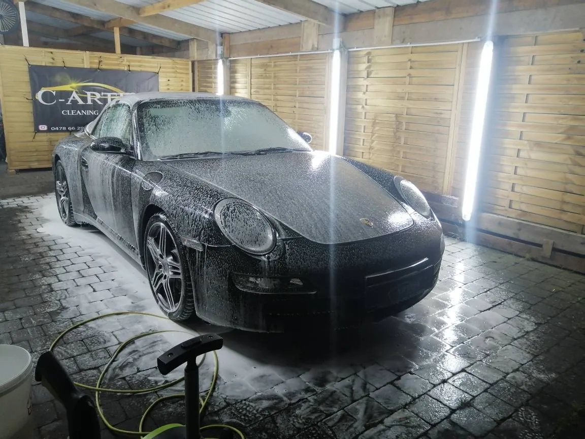
Van een grondige was tot polijsten en een coating. Binnen en buiten, met oog voor elk hoekje.
Ik heb heel wat autoshows afgeschuimd en nog meer races bijgewoond. Altijd op de uitkijk naar mooie, speciale en blinkende wagens. Uit die liefde voor auto's is C-artist gegroeid.
Vandaag neem ik zelf je wagen onder handen. Van een simpele was en waxbeurt tot polijsten in meerdere stappen en een coating die je lak langdurig beschermt.
Bel, stuur een berichtje of mail me. Dan bekijken we samen wat je wagen nodig heeft.
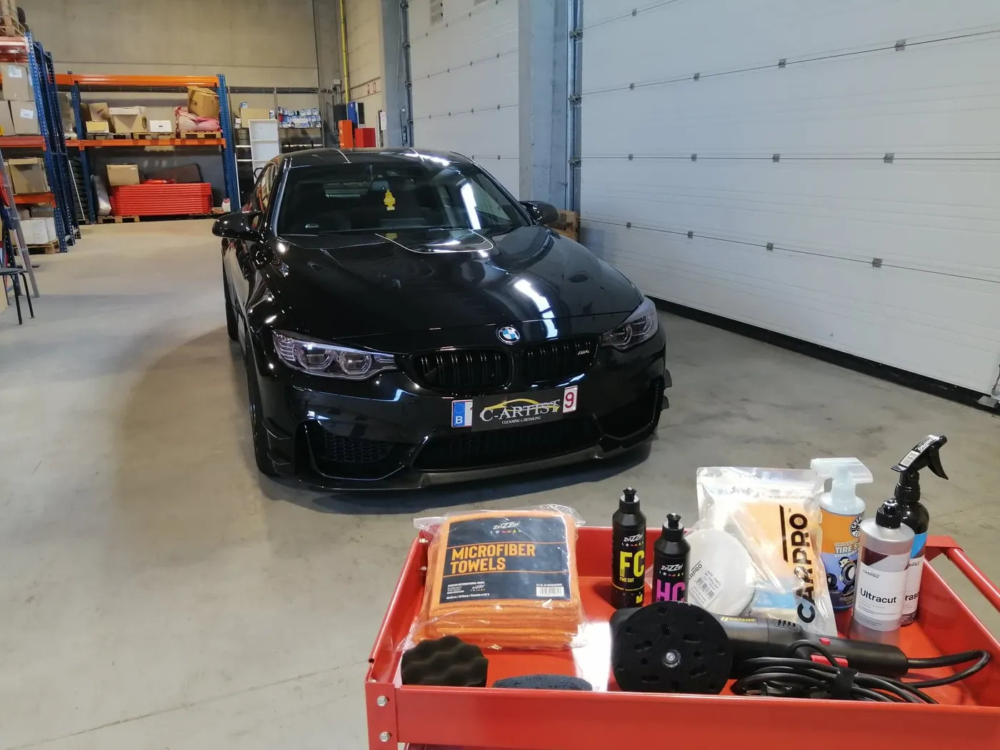
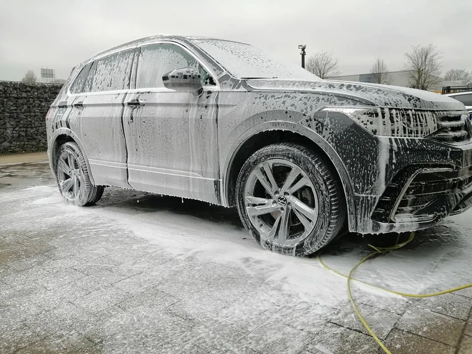
Wil je maar een deel van een behandeling? Geen probleem. Je krijgt altijd een prijs op maat.
Een luxueuze wasbeurt volgens de regels van de kunst, afgewerkt met een beschermende wax.
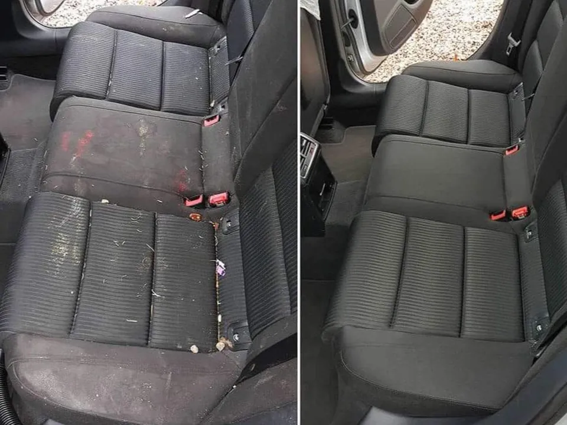
Van een grondige poetsbeurt tot een dieptereiniging die vlekken uit stof en leder haalt.

Waskrassen weg en de diepe glans terug. In één of meer stappen, afhankelijk van je lak.

Een extra harde laag die je lak lang beschermt. Vuil en water krijgen minder vat.
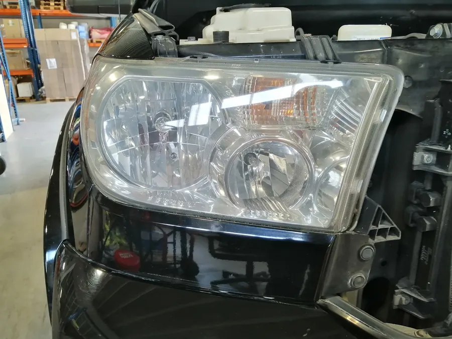
Doffe of verkleurde koplampen worden weer helder. Ook handig voor de keuring.
Een greep uit recent werk, van zetels tot koplampen.
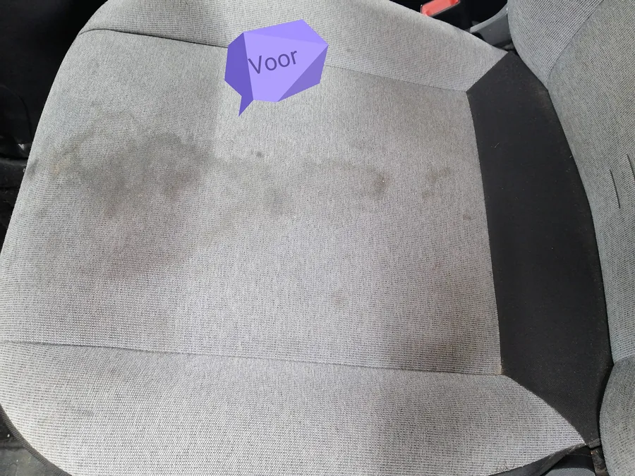
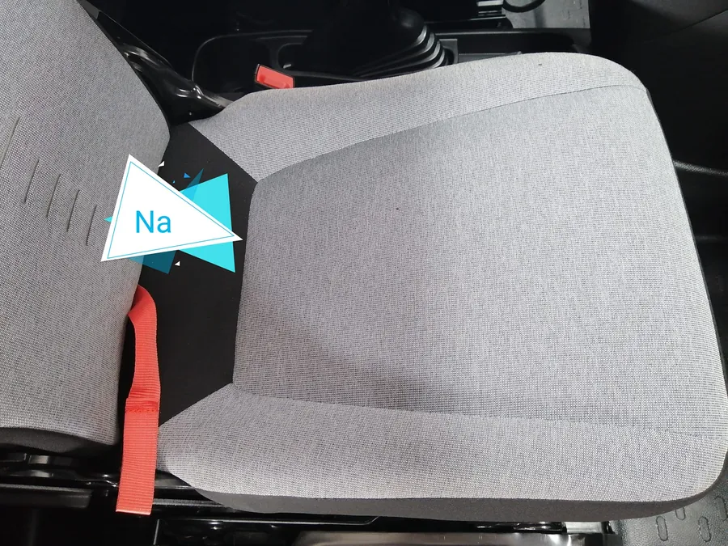
Dieptereiniging van stoffen bekleding.
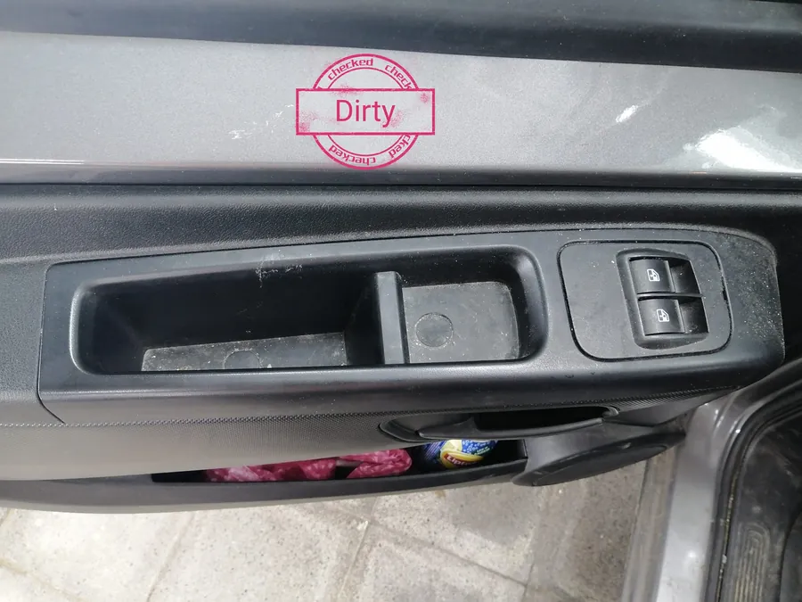
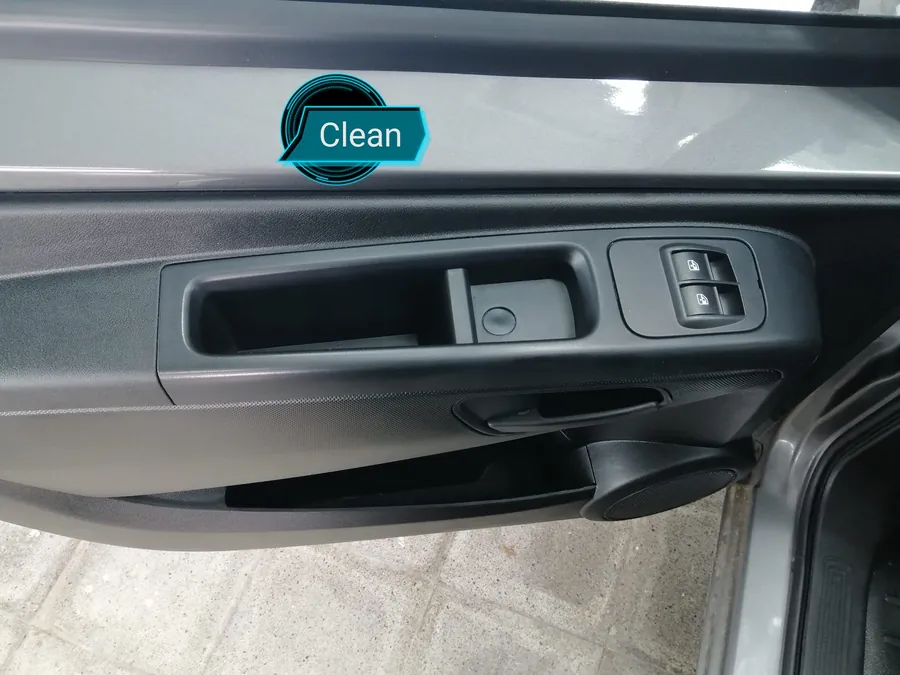
Tot in de vakjes en de randen.
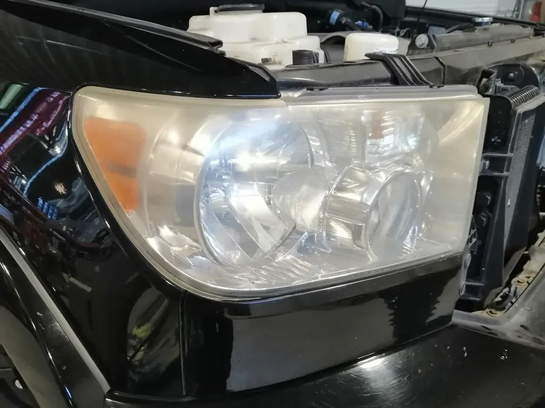
Geschuurd en gepolijst, weer helder.
Geen zin of tijd om je wagen te wassen zoals het hoort? Dan doe ik het, enkel met professionele producten.
Enkel een deel nodig? Vraag gerust een prijs voor wat jij wil.
Een coating sluit alles onder zich af. Daarom wordt je wagen eerst gepolijst, zodat er geen krassen onder de coating blijven zitten. Zo krijg je de mooiste glans en een lak die je nadien veel makkelijker proper houdt.
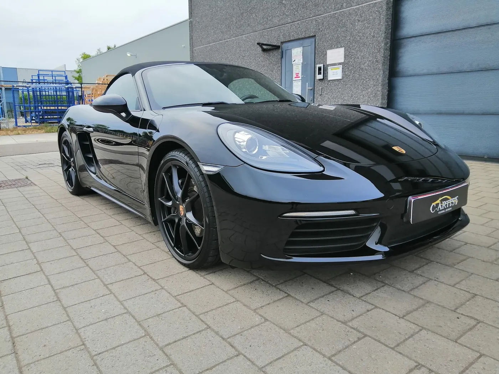
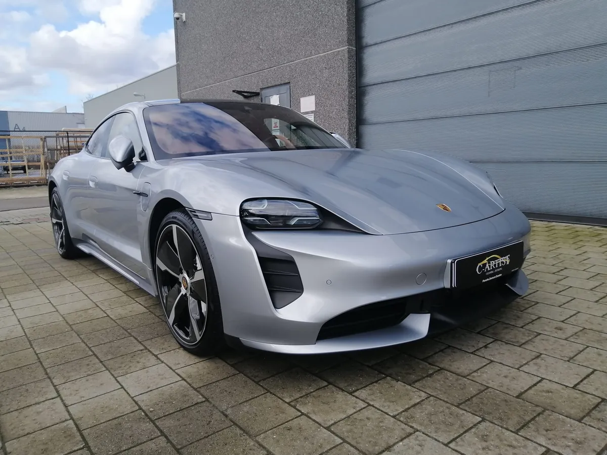
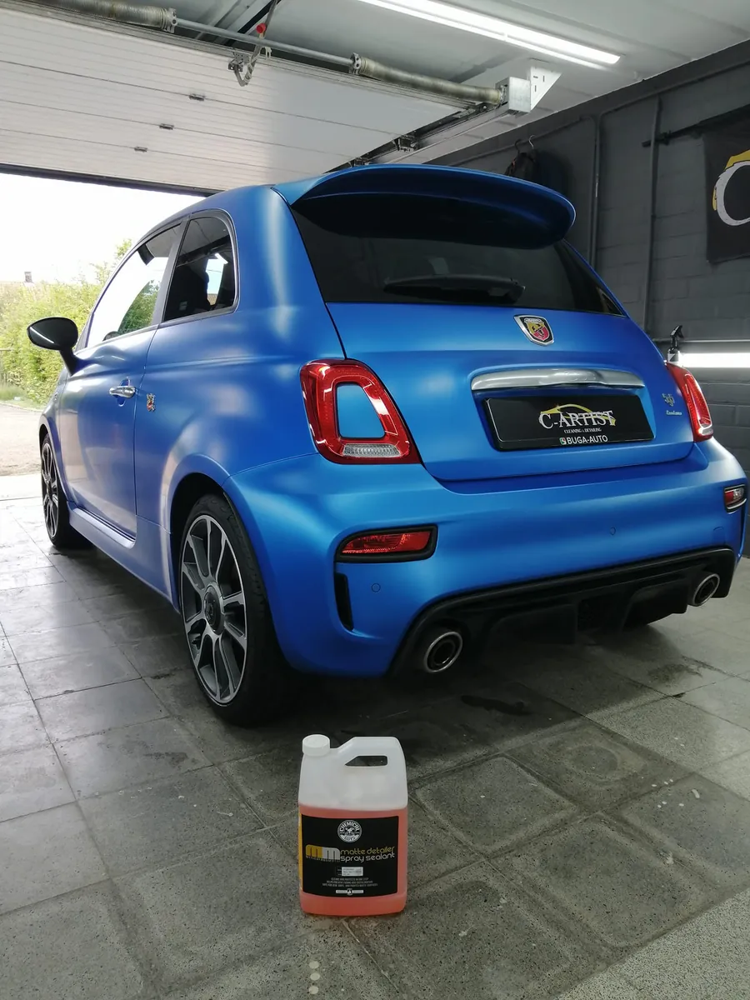

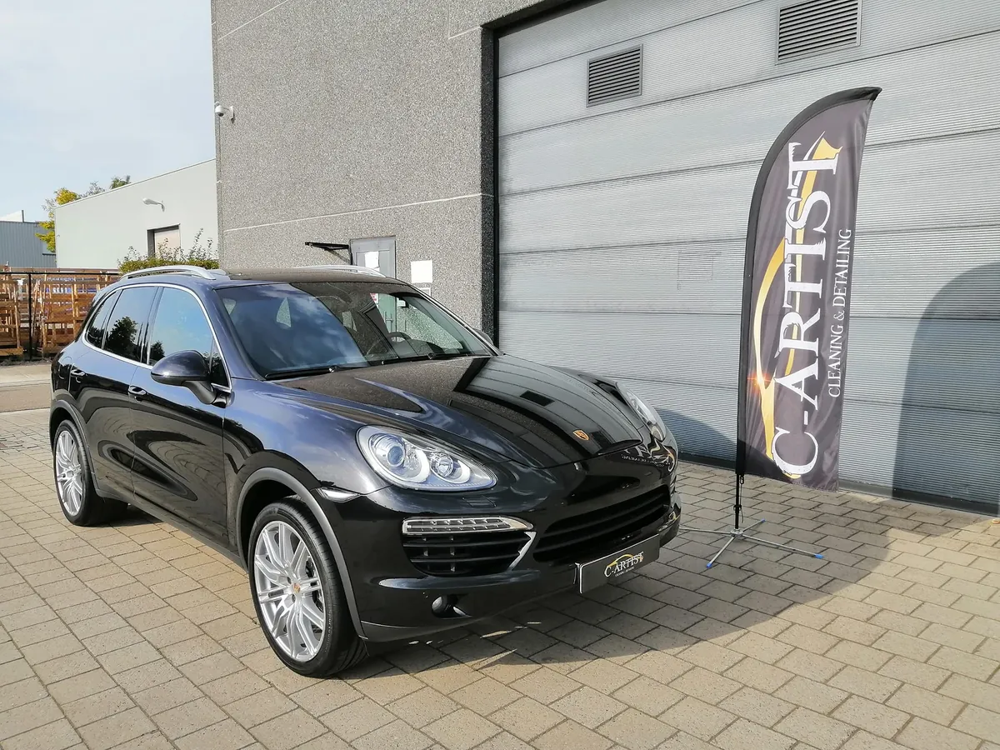

Bel, stuur een WhatsApp of mail. Vertel kort wat je wagen nodig heeft en je krijgt een prijs op maat.
5,0Ik maakte deze demo voor jullie om te tonen wat er kan. Na een kort gesprek maak ik er iets veel persoonlijkers van, helemaal naar jullie wens.
Vrijblijvend. Ik kom langs of we bellen.
Op maat, op jullie eigen domein.
Geen voorschot. Jullie betalen pas als alles klaar is.
Hosting, domeinnaam en kleine wijzigingen, zoals nieuwe openingsuren.
Omdat een voorbeeld meer zegt dan een mail. Zo zien jullie meteen wat er kan, en het kost jullie niets.
Nee. Het gesprek is vrijblijvend. Vinden jullie het niks, dan is het daarmee gedaan.
Na ons gesprek staat jullie site binnen 10 tot 14 dagen online.
Zeker. Jullie domeinnaam kan gewoon blijven, de nieuwe site komt in de plaats van de oude.
Nee, dat doe ik op basis van ons gesprek. Eigen foto's zijn mooi meegenomen, maar niet nodig om te starten.